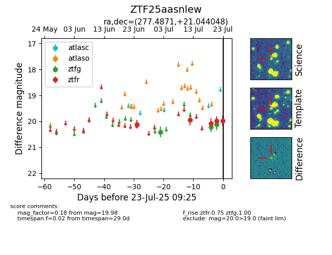

Target ZTF25aasnlew at 2025-07-23 12:37, see:
FINK: fink-portal.org/ZTF25aasnlew
Lasair: lasair-ztf.lsst.ac.uk/objects/ZTF25aasnlew
ALeRCE: alerce.online/object/ZTF25aasnlew
alt names
ZTF25aasnlew (ztf,fink)
coordinates:
equatorial (ra, dec) = (277.4871,+21.04405)
galactic (l, b) = (49.6863,+13.97556)
photometry
last ztfg=20.12, ztfr=19.98
3 ztfg, 5 ztfr detections
